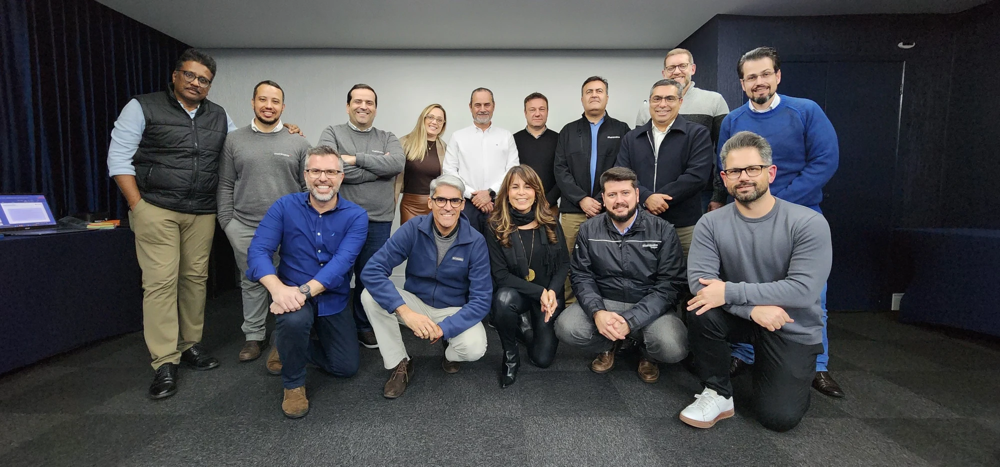
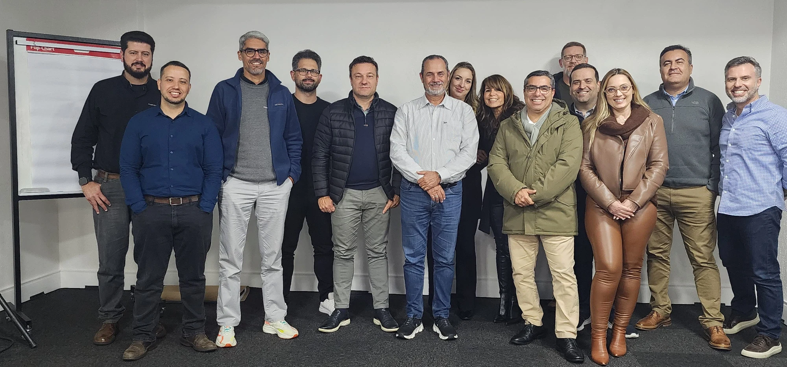
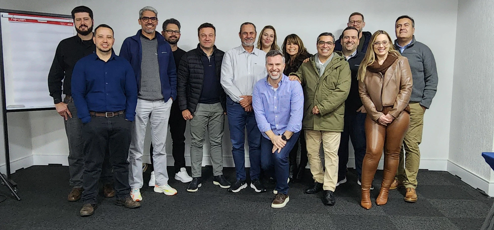
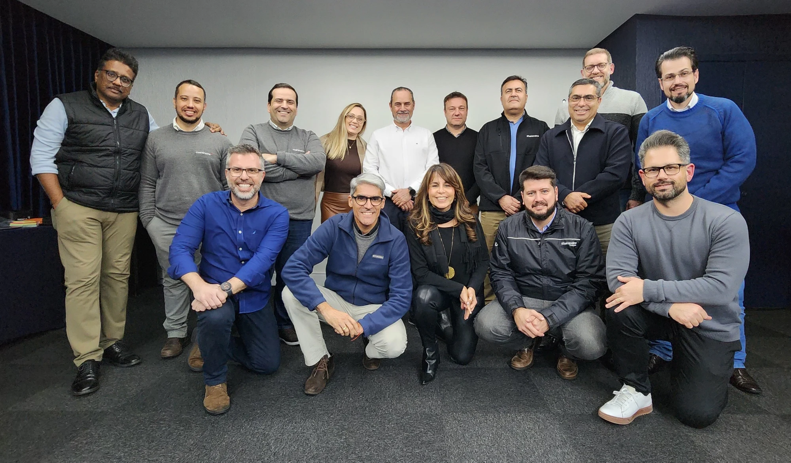

Alinhar a direção
Diagnóstico, escuta das lideranças e um primeiro protótipo do Book. No workshop de 23 de junho, o grupo revisou a direção institucional e discutiu as capacidades necessárias à evolução do negócio.
ESTUDO DE CASO · ABO ACADEMY
ESTRATÉGIA E LIDERANÇA
Como as lideranças da Mahindra Brasil conectaram visão de longo prazo, capacidades e aprendizagem coletiva para construir o próximo ciclo.
Conheça a jornada01 / O DESAFIO
Como construir uma estratégia compreendida e assumida pelas pessoas responsáveis por realizá-la?
Na operação brasileira da Mahindra, a evolução do negócio passa por conectar produtos, indústria, concessionários e pós-venda às necessidades dos produtores rurais.
O desafio do PEE foi articular visão de futuro e capacidades organizacionais, integrando decisões sobre clientes, mercado, produtos, rede, operações e pessoas. Diferentes áreas passaram a discutir suas contribuições para resultados compartilhados.
02 / A CONSTRUÇÃO
Entrevistas, análise de documentos, workshops e sessões de mentoria estratégica e business coaching deram forma à jornada.

Diagnóstico, escuta das lideranças e um primeiro protótipo do Book. No workshop de 23 de junho, o grupo revisou a direção institucional e discutiu as capacidades necessárias à evolução do negócio.
As sessões de calibração aprofundaram estados desejados, critérios de sucesso, recursos e interdependências. O segundo workshop confrontou as propostas com sua coerência e viabilidade.
Em 16 de setembro, o terceiro workshop reuniu as lideranças para apresentar e revisar coletivamente o Book Mahindra Brazil 2036.
O MÉTODO NA PRÁTICA
A arquitetura PuRe CaRe conectou as escolhas estratégicas. Agentes de IA apoiaram análises e elaboração de materiais; a avaliação crítica e as decisões permaneceram com as lideranças da Mahindra.
03 / AS ENTREGAS E A APRENDIZAGEM
O programa entregou uma referência compartilhada para decidir e reuniu relatos de aprendizagem entre áreas.
Direção institucional, resultados pretendidos, capacidades e referências para governança reunidos em uma arquitetura estratégica.
Doze capacidades organizadas em quatro pilares, explicitando frentes de desenvolvimento, responsabilidades e interdependências.
Os relatos de encerramento destacaram abertura ao diálogo, compreensão do negócio e participação na construção da estratégia.
Participantes relataram desenvolvimento do pensamento crítico e da capacidade de análise e design estratégico com apoio de IA.
O alcance desta etapa. As evidências são a arquitetura entregue, a participação na construção e a aprendizagem relatada. A implementação das capacidades e os resultados econômicos dependem da execução e da continuidade da governança.
04 / A EXPERIÊNCIA DOS PARTICIPANTES
“A gente aprendeu a trabalhar juntos, evoluímos juntos.”
“A gente conseguiu ser mais aberto, discutir mais claramente, sabendo que o que ia ficar aqui ia ser com a construção de todos.”
“Ter essa amplitude de ter a visão 360 de uma empresa.”
Manifestações registradas no encontro de encerramento, sem identificação individual.



05 / O APRENDIZADO QUE PERMANECE
No encontro final, as lideranças mantiveram o horizonte 2036 e reexaminaram a primeira onda de execução diante das condições atualizadas do negócio.
A experiência mostra como formulação estratégica e desenvolvimento da liderança podem acontecer no mesmo processo: analisar hipóteses, discutir interdependências e desenhar capacidades amplia a compreensão do negócio.
O programa também apresentou papéis e revisões mensais, trimestrais e anuais. A instalação e a sustentação desses ciclos pertencem à gestão da Mahindra.
PARA LER E COMPARTILHAR
Contexto, método, resultados e aprendizados da jornada da Mahindra Brasil em uma edição de duas páginas A4.
O download da versão completa será exclusivo para pessoas inscritas na ABO Academy.
Inscreva-se na ABO Academy ↗Inscreva-se ou faça login na ABO Academy e retorne a esta página para baixar o PDF.
O PRÓXIMO CICLO DA SUA ORGANIZAÇÃO
Conheça o Planejamento Estratégico Evolucionário e converse com a ABO Academy sobre os desafios do seu negócio.
Base editorial: Case Study Mahindra ABO, protótipo de outubro de 2026. Documentação e registros do PEE Mahindra Brasil, maio–setembro de 2026, incluindo o Book, revisões e workshops. Depoimentos: encerramento do Workshop #3. Fontes internas de acesso restrito.
Este protótipo está sujeito à validação do cliente. Fotografias fornecidas para este case. Legendas sujeitas à validação do cliente.
Logo obtido na central oficial de mídia da Mahindra.